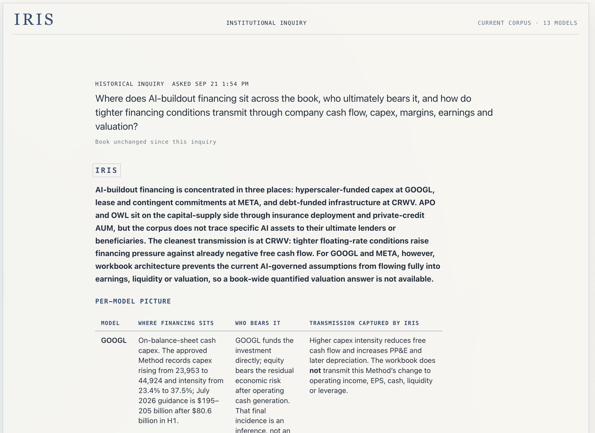
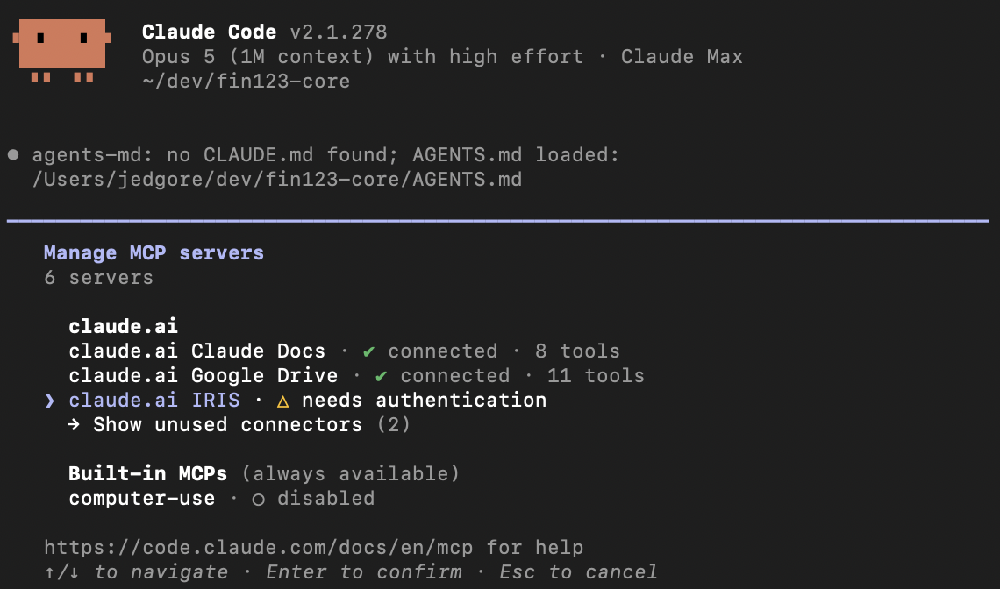

Explore freely
Ask anything across every model in the book. Asking is read-only: no question can change a model, an estimate or a record.
The AI harness for fundamental research analysts.
Explore ideas with frontier AI. Test them through the actual models in a safe Sandbox. Preserve the work for audit.
Case Study: Where does AI-related debt exposure sit?
Every model is imported and understood: its drivers, its assumptions, and how each forecast flows through earnings, cash flow and financing.
On top sits what your team knows: the approach behind each estimate, the evidence it rests on, and the conclusions analysts chose to keep.
And IRIS remembers how it got here: every version, every approved change, and why the numbers moved.
So when you ask where AI financing sits across the book, the answer starts from all of that.

Ask anything across every model in the book. Asking is read-only: no question can change a model, an estimate or a record.
Before a test runs, see every assumption it would change beside the model's current value. Afterward, compare the result with a control run on the same version. Your working model is never touched.
A test runs the you approved, not whatever an assistant would say today. Save the assumptions, results or conclusion only when they're worth keeping.
Ask questions across the book. Follow an idea into a company model. Test assumptions and inspect what changes, all in one conversation.
Claude and Codex provide the reasoning. IRIS provides the models, the sandbox and the memory.
Run experiments through your actual models without changing the baseline. Save the findings you choose, with the evidence behind them. Next quarter, or after the analyst who found them has moved on, the reasoning is still there in the IRIS web app, and in Claude and Codex once the connector launches.

Turn your models into an ecosystem.
The same move in rates, spreads, demand, or pricing can affect every company differently. IRIS lets the PM ask one question across the book and follow every answer back to the relevant forecast, assumptions, evidence, and prior work.
PM View reads. It never writes. It can tell you what every model in the book says and show you exactly where each answer came from, but it never becomes the answer itself. The model, and the analyst who owns it, stay the authority.
When the world changes, which of my models should change with it, and why?
A move in credit spreads may matter to funding cost in one company, reinvestment yield in another, and expected losses somewhere else.
Compare how the same economic change affects different companies, using the assumptions and forecasts in each model.
Research in one name can inform the next. Compare exposures, test a shared scenario, and find the evidence behind a view across the companies you cover.
The team's research becomes knowledge the whole book can use.


Import the Excel workbook. IRIS identifies the historical periods, forecast periods, operating drivers, assumptions, and financial statements, then explains how they fit together.
IRIS works out the spreadsheet once, so every question after that starts with the business, not with the grid.
See how volume and pricing build revenue, how margins turn sales into earnings, and how investment and working capital affect cash flow and financing needs.
IRIS reads the formulas and assumptions already in the workbook. Its explanation gives you a starting point for asking what matters and where to look more closely.
What drives the number? Which assumptions matter most? What evidence supports the view, and where is the model thin?
Follow an estimate back to its drivers and supporting research. That understanding stays with the model as the forecasts change, instead of being re-derived every time someone asks.

Every important estimate reflects an approach: which evidence matters, which assumptions hold, and what should cause the forecast to move.
IRIS makes that approach explicit, saves it as a Method, and puts it into Excel with =AI(). The estimate remains part of the workbook and flows through every calculation that depends on it.
=AI()
A Method is your approach to the estimate, running inside the model.
Draft it with AI or write it yourself. It shapes the estimate only after you approve it.

Revise a Method and you create a new version of it. Replaying an earlier run replays the Method that run actually used.
Ask what supports an assumption, what changed in the latest filing, where the model is thin, or what would change the investment view.
IRIS answers with the model already understood. Ask as much as you like. Asking changes nothing. A conclusion worth keeping goes back to the company and the estimate when you say so, instead of disappearing into another chat.

Change a market assumption or challenge the company outlook. IRIS proposes the specific cells it would change, and nothing runs until you approve that list.
Ask, "What happens if SOFR rises 100 basis points?"
IRIS finds where SOFR enters the forecast and shows each cell it proposes to change beside what the model says today. You approve a specific list of assumptions, not a description of a scenario.
Market values are frozen at the moment of the proposal. If the world moves before you approve, IRIS refuses the stale value rather than quietly running on it.
Pressing Run executes two runs: a control carrying no assumptions, and your sandbox bound to it. Both use the same version, the same Methods, and the same frozen market snapshot, differing only by the assumptions you approved.
The comparison is same-quarter, sandbox against control. What you read is the difference your assumptions made, not movement that was already in the forecast.
A run changes nothing in the baseline. Your working model, the current version, and every Method are exactly as they were. The sandbox and its control are each preserved as immutable runs, available for comparison. A note is written only when you save one.
IRIS can refresh approved market and economic inputs overnight, identify which estimates depend on what changed, and rerun the affected analysis using the Methods you approved, not a fresh opinion.
The results stay available for review, with the assumptions, evidence, and prior work behind them. Begin the day knowing where to focus.

A revised estimate should not erase the view that came before it. IRIS keeps the approach behind the estimate, evidence, model change, and resulting financial impact together.
Go back to any version and see what changed, why it changed, who approved it, and how the change flowed through the model.

This is not chatbot memory. Nothing is absorbed in the background, and nothing is learned from you without being written down. Entries are explicit, reviewable, and versioned. Replaying an earlier run replays what that run actually used, not what the system knows today.
Start with CoreWeave (CRWV). Trace the financing obligations, ask who bears the exposure, and examine what would change its value. Each answer sets up the next question, from the scheduled debt to the evidence needed for an investment view.
The inquiry starts with evidence already in the model: lease obligations, the cash interest rate forecast, delayed-draw term loan (DDTL) and OEM financing disclosures, undrawn borrowing capacity, and equity. From there, it asks whether the exposure can be connected to other companies in the book.
A useful finding from the inquiry: in the exchange below, IRIS identifies the gap between forecasting contractual debt payments and estimating a DDTL's market value. It identifies what is still needed: which loan is being valued and as of when, its expected cash flows, market pricing, contractual terms, and credit risks. The next question asks how to resolve each gap.


Carry the conclusion forward. Eleven questions, none of which changed the model. The analyst decides which of them produced something worth keeping, and saves that as a note with the model. Weeks later, when a colleague picks up the financing question, they start from the evidence, the interpretation, and the questions that were still open.
A folder cannot tell a model which version was current, which estimate the analyst had already approved, what evidence that approval rested on, or what the last person to look at this company concluded.
IRIS holds the state of the work. Use frontier AI to research the company, challenge an assumption, or reason through a forecast. The work happens against a book whose current version is resolved, whose approvals are explicit, and whose conclusions were written down on purpose. The research focuses on what drives the estimate: funding costs, unit growth, margins, credit losses, pricing, or operating leverage.
Your questions build on earlier research and the current forecast. You can see the assumptions behind a proposed change, decide whether to use it, and return to the reasoning later.
Ask anything of the book. Nothing you ask can change it.
See every proposed assumption before it runs, and what it changed against a control run.
Keep what you concluded, on purpose, where the next question will find it.
The analyst decides what becomes the record. IRIS makes sure the record survives the next question.
IRIS gives your AI the research book: current, governed, and remembering what the analyst concluded. The models stay in Excel, the analyst decides the approach, and each new question builds on the work that came before it.